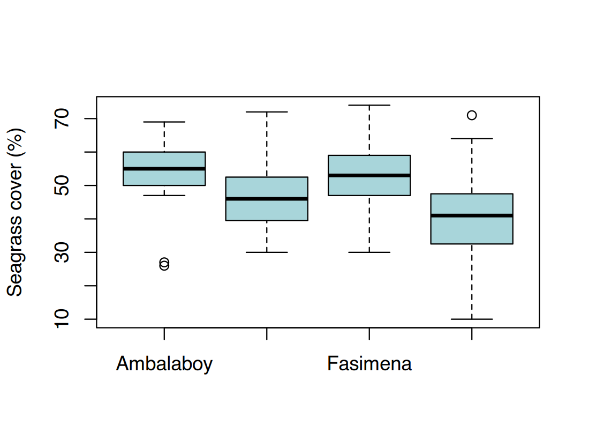
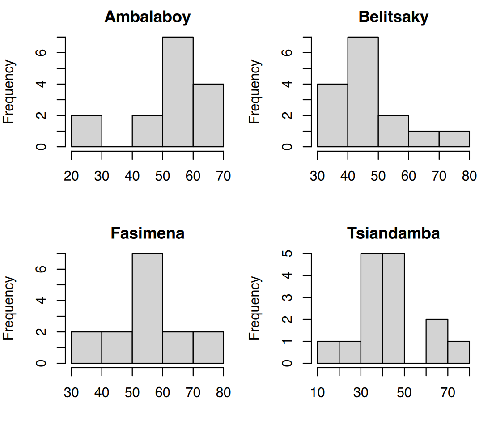

|>;|> ;Seagrass survey
(seagrass_quadrats.csv): in March 2026 a team of two
snorkellers sampled 4 sites (Ambalaboy and Fasimena
inside a Marine Protected Area, Belitsaky and Tsiandamba outside),
15 quadrats of 50 × 50 cm per site, placed every 5 m
along a tape. For each quadrat they wrote on an underwater slate the
depth (dive computer), the dominant species, the % cover (visual
estimate), the canopy height (ruler, cm) and the number of shoots,
converted to shoots per m². Type: one row = one quadrat;
numeric (continuous) and categorical variables.
Reef fish census (fish_uvc.csv):
underwater visual census on 4 reefs (Andavaka and
Belavenoke inside the MPA, Ambola and Tsifota outside), 3 belt
transects of 50 × 5 m (250 m²) per reef. A diver swam each
transect and recorded every group of fish: species, family, estimated
total length (cm) and number of individuals. The length–weight
parameters a and b were added afterwards from
FishBase. Type: one row = one group of fish of the same species
and size; counts (integers), lengths (continuous), categories.
Suivi des herbiers
(seagrass_quadrats.csv) : en mars 2026, une équipe de deux
plongeurs en apnée a échantillonné 4 sites (Ambalaboy
et Fasimena dans une Aire Marine Protégée, Belitsaky et Tsiandamba à
l’extérieur), 15 quadrats de 50 × 50 cm par site, posés
tous les 5 m le long d’un ruban. Pour chaque quadrat ils ont noté sur
une ardoise la profondeur (ordinateur de plongée), l’espèce dominante,
le % de recouvrement (estimation visuelle), la hauteur de canopée
(règle, cm) et le nombre de pousses, converti en pousses par m².
Type : une ligne = un quadrat ; variables numériques
(continues) et catégorielles.
Comptage des poissons récifaux
(fish_uvc.csv) : comptage visuel sous-marin sur 4
récifs (Andavaka et Belavenoke dans l’AMP, Ambola et Tsifota à
l’extérieur), 3 transects-bandes de 50 × 5 m (250 m²)
par récif. Un plongeur a parcouru chaque transect en notant chaque
groupe de poissons : espèce, famille, longueur totale estimée (cm) et
nombre d’individus. Les paramètres taille–poids a et
b ont été ajoutés ensuite depuis FishBase. Type :
une ligne = un groupe de poissons de même espèce et de même taille ;
effectifs (entiers), longueurs (continues), catégories.
⇩ seagrass_quadrats.csv ⇩ fish_uvc.csv ⇩ B04_fish_biomass.csv
Everything you have used so far — mean(),
subset(), tapply(), barplot() —
comes with R itself (“base R”). A
package is an extension: a bundle of
extra functions (and often data and documentation) written by
researchers and developers, that you add to R when you need it. Packages
are why R is so widely used in ecology: there is a package for diversity
indices (vegan), for maps (sf), for mixed
models (lme4), and so on.
Packages are published on CRAN (Comprehensive R Archive Network), the same website you downloaded R from. CRAN holds well over 20 000 packages, each checked automatically before it is accepted. Other packages live on GitHub or Bioconductor, but for this course CRAN is all you need.
Tout ce que vous avez utilisé jusqu’ici — mean(),
subset(), tapply(), barplot() —
est fourni avec R lui-même (« R de base »). Un
package est une extension : un
ensemble de fonctions supplémentaires (souvent avec des données et de la
documentation) écrites par des chercheurs et des développeurs, que l’on
ajoute à R quand on en a besoin. Les packages expliquent pourquoi R est
si utilisé en écologie : il existe un package pour les indices de
diversité (vegan), pour les cartes (sf), pour
les modèles mixtes (lme4), etc.
Les packages sont publiés sur le CRAN (Comprehensive R Archive Network), le site d’où vous avez téléchargé R. Le CRAN compte bien plus de 20 000 packages, chacun vérifié automatiquement avant d’être accepté. D’autres packages se trouvent sur GitHub ou Bioconductor, mais pour ce cours le CRAN suffit.
The library analogy. CRAN is a bookshop.
install.packages() buys a book and puts it
on the shelf of your computer — you do it once (and
again only to update it). library() takes the book
off the shelf and opens it on your desk — you do it
every time you start R, at the top of each script that
uses the package.
L’analogie de la bibliothèque. Le CRAN est une
librairie. install.packages() achète un
livre et le range sur l’étagère de votre ordinateur — on le fait
une fois (et à nouveau seulement pour le mettre à
jour). library() sort le livre de l’étagère et
l’ouvre sur votre bureau — on le fait à chaque
fois qu’on démarre R, en haut de chaque script qui utilise le
package.
Functions and arguments used here
| Function / argument | What it does | Value it expects |
|---|---|---|
install.packages(pkgs) |
downloads packages from CRAN and installs them on the computer | package names in quotes, in c() for
several |
library(package) |
loads an installed package for this R session | one package name, with or without quotes |
Fonctions et arguments utilisés ici
| Fonction / argument | Ce qu’il fait | Valeur attendue |
|---|---|---|
install.packages(pkgs) |
télécharge des packages depuis le CRAN et les installe sur l’ordinateur | noms de packages entre guillemets, dans
c() pour plusieurs |
library(package) |
charge un package installé pour cette session R | un nom de package, avec ou sans guillemets |
R itself is a set of packages installed and loaded automatically:
base (c(), mean(),
subset()), stats (sd(),
median(), aggregate()),
graphics (plot(), barplot()),
utils (read.csv(), head())…
Some are installed but not loaded, like tools: that is
why in Session 5 you wrote tools::toTitleCase(). The
:: means “use this function from this package without
loading the whole package”.
R lui-même est un ensemble de packages installés et chargés
automatiquement : base (c(),
mean(), subset()), stats
(sd(), median(), aggregate()),
graphics (plot(), barplot()),
utils (read.csv(), head())…
Certains sont installés mais pas chargés, comme tools :
c’est pourquoi en séance 5 vous avez écrit
tools::toTitleCase(). Le :: signifie «
utiliser cette fonction de ce package sans charger tout le package
».
Functions and arguments used here
| Function / argument | What it does | Value it expects |
|---|---|---|
update.packages() |
updates all the installed packages that have a newer version | nothing (it asks for each package) |
citation(package) |
the reference to cite for a package (without argument: R itself) | a package name in quotes |
Fonctions et arguments utilisés ici
| Fonction / argument | Ce qu’il fait | Valeur attendue |
|---|---|---|
update.packages() |
met à jour tous les packages installés qui ont une version plus récente | rien (il demande pour chaque package) |
citation(package) |
la référence à citer pour un package (sans argument : R lui-même) | un nom de package entre guillemets |
dplyr (data manipulation) and
ggplot2 (graphics) belong to the
tidyverse, a family of packages designed to work
together with the same philosophy: one function = one verb, data frame
in → data frame out. Other members you will meet later:
tidyr (reshaping tables), readr (fast
import), stringr (text), lubridate
(dates). install.packages("tidyverse") installs the whole
family at once (large download); here we install only the two we
need.
dplyr (manipulation de données) et
ggplot2 (graphiques) appartiennent au
tidyverse, une famille de packages conçus pour
fonctionner ensemble selon la même philosophie : une fonction = un
verbe, un data frame en entrée → un data frame en sortie. D’autres
membres que vous rencontrerez plus tard : tidyr
(restructurer des tableaux), readr (import rapide),
stringr (texte), lubridate (dates).
install.packages("tidyverse") installe toute la famille
d’un coup (gros téléchargement) ; ici nous n’installons que les deux
nécessaires.
filter from
stats. Two packages have a function with the same name;
the last loaded wins. This is normal. To be explicit, write
dplyr::filter() or stats::filter().there is no package called 'dplyr' → it is not
installed yet. On Windows, if an installation fails with a compilation
message, check Rtools (Session 0).update.packages() or the Update button in
the Packages pane.citation("dplyr") gives the
reference.filter de
stats. Deux packages ont une fonction du même nom ; le
dernier chargé l’emporte. C’est normal. Pour être explicite, écrivez
dplyr::filter() ou stats::filter().there is no package called 'dplyr' → il n’est pas
encore installé. Sous Windows, si une installation échoue avec un
message de compilation, vérifiez Rtools (séance
0).update.packages() ou le bouton Update du
panneau Packages.citation("dplyr") donne la référence.|>Le pipe |>The pipe sends the result on its left into the first
argument of the function on its right. Read it as
“then”. RStudio shortcut: Ctrl + Shift +
M (to get |> rather than %>%,
tick Tools → Global Options → Code → Use native pipe operator).
You will also see %>% in older code: for our use it does
the same thing.
Le pipe envoie le résultat de gauche dans le premier
argument de la fonction de droite. Lisez-le « puis
». Raccourci RStudio : Ctrl + Maj + M (pour
obtenir |> plutôt que %>%, cochez
Tools → Global Options → Code → Use native pipe operator). Vous
verrez aussi %>% dans du code plus ancien : pour notre
usage, il fait la même chose.
#> [1] 48.5#> [1] 48.5Functions and arguments used here
| Function / argument | What it does | Value it expects |
|---|---|---|
x |> f(y) |
the same as f(x, y): the result on the left becomes the
first argument of the function on the right; the other
arguments (1 for round()) are written as
usual |
Fonctions et arguments utilisés ici
| Fonction / argument | Ce qu’il fait | Valeur attendue |
|---|---|---|
x |> f(y) |
la même chose que f(x, y) : le résultat de gauche
devient le premier argument de la fonction de droite ;
les autres arguments (1 pour round())
s’écrivent comme d’habitude |
The pipe is not specific to dplyr: it works with base R functions too, as above.
Le pipe n’est pas propre à dplyr : il fonctionne aussi avec les fonctions de base, comme ci-dessus.
Each dplyr verb takes a data frame as first argument
and returns a data frame. Inside the verbs you write column names
without sg$. For each verb, the left box
shows how you already do it in base R (Sessions 3–6), the right box the
dplyr way. Both give the same result.
Chaque verbe dplyr prend un data frame comme premier
argument et renvoie un data frame. Dans les verbes, on écrit
les noms de colonnes sans sg$. Pour chaque
verbe, le cadre de gauche montre comment vous le faites déjà en R de
base (séances 3–6), celui de droite la façon dplyr. Les deux
donnent le même résultat.
filter() — keep rowsfilter() — garder des lignesR base
#> site mpa_status quadrat date
#> 23 Fasimena Inside 8 2026-03-11
#> 28 Fasimena Inside 13 2026-03-11#> site mpa_status quadrat date
#> 23 Fasimena Inside 8 2026-03-11
#> 28 Fasimena Inside 13 2026-03-11Functions and arguments used here
| Function / argument | What it does | Value it expects |
|---|---|---|
filter(.data, ...) |
keeps the rows where all the conditions are
TRUE; rows where a condition is NA are
dropped |
a data frame, then conditions separated by commas (= AND) |
Fonctions et arguments utilisés ici
| Fonction / argument | Ce qu’il fait | Valeur attendue |
|---|---|---|
filter(.data, ...) |
garde les lignes où toutes les conditions valent
TRUE ; les lignes où une condition vaut NA
sont retirées |
un data frame, puis des conditions séparées par des virgules (= ET) |
select() — keep, drop or reorder
columnsselect() — garder, retirer
ou réordonner des colonnesR base
#> site quadrat seagrass_cover
#> 1 Ambalaboy 1 69
#> 2 Ambalaboy 2 47
#> 3 Ambalaboy 3 64#> [1] "site" "mpa_status" "quadrat" "species" "seagrass_cover"
#> [6] "canopy_height_cm" "shoot_density"Functions and arguments used here
| Function / argument | What it does | Value it expects |
|---|---|---|
select(.data, ...) |
keeps columns, in the order given | column names without quotes, positions
(1:4), ranges (site:date); -name
drops a column |
Fonctions et arguments utilisés ici
| Fonction / argument | Ce qu’il fait | Valeur attendue |
|---|---|---|
select(.data, ...) |
garde des colonnes, dans l’ordre donné | noms de colonnes sans guillemets, positions
(1:4), plages (site:date) ; -nom
retire une colonne |
mutate() — add or change
columnsmutate() — ajouter ou
modifier des colonnesNote: inside one mutate() you can use a column created
just before (cover_prop).
Remarque : dans un même mutate(), on peut utiliser une
colonne créée juste avant (cover_prop).
Functions and arguments used here
| Function / argument | What it does | Value it expects |
|---|---|---|
mutate(.data, name = calculation, ...) |
adds a column name (or replaces it if it exists);
several columns separated by commas |
new_column = expression using column names |
Fonctions et arguments utilisés ici
| Fonction / argument | Ce qu’il fait | Valeur attendue |
|---|---|---|
mutate(.data, name = calculation, ...) |
ajoute une colonne name (ou la remplace si elle existe)
; plusieurs colonnes séparées par des virgules |
nouvelle_colonne = expression avec des noms de
colonnes |
arrange() — sort rowsarrange() — trier les lignesR base
#> site seagrass_cover
#> 28 Fasimena 74
#> 58 Belitsaky 72
#> 23 Fasimena 71Functions and arguments used here
| Function / argument | What it does | Value it expects |
|---|---|---|
arrange(.data, ...) |
sorts the rows, by the first column then the next ones in case of ties (increasing) | column names |
desc(x) |
inside arrange(): decreasing order for this column |
a column name |
Fonctions et arguments utilisés ici
| Fonction / argument | Ce qu’il fait | Valeur attendue |
|---|---|---|
arrange(.data, ...) |
trie les lignes, selon la première colonne puis les suivantes en cas d’égalité (croissant) | noms de colonnes |
desc(x) |
dans arrange() : ordre décroissant pour cette
colonne |
un nom de colonne |
To sort from largest to smallest:
order(x, decreasing = TRUE) in base R (Session 5),
arrange(desc(x)) in dplyr. Same result, different
words.
Pour trier du plus grand au plus petit :
order(x, decreasing = TRUE) en R de base (séance 5),
arrange(desc(x)) dans dplyr. Même résultat, mots
différents.
rename() — rename columnsrename() — renommer des colonnesR base
#> [1] "cover_pct"Functions and arguments used here
| Function / argument | What it does | Value it expects |
|---|---|---|
rename(.data, new = old) |
renames columns; the new name is on the left of
= |
new_name = old_name, without quotes |
Fonctions et arguments utilisés ici
| Fonction / argument | Ce qu’il fait | Valeur attendue |
|---|---|---|
rename(.data, new = old) |
renomme des colonnes ; le nouveau nom est à gauche
du = |
nouveau_nom = ancien_nom, sans guillemets |
group_by() + summarise()
— statistics per groupgroup_by() +
summarise() — statistiques par groupeR base
n <- tapply(sg$seagrass_cover, sg$site, length)
m <- tapply(sg$seagrass_cover, sg$site, mean)
s <- tapply(sg$seagrass_cover, sg$site, sd)
data.frame(site = names(m), n = as.vector(n),
mean = as.vector(m), sd = as.vector(s))#> site n mean sd
#> 1 Ambalaboy 15 52.80000 12.28937
#> 2 Belitsaky 15 46.93333 11.99087
#> 3 Fasimena 15 52.60000 12.56298
#> 4 Tsiandamba 15 41.66667 15.48578n() counts the rows of each group. Add
.groups = "drop" in summarise() when you group
by two variables, to remove the grouping afterwards.
n() compte les lignes de chaque groupe. Ajoutez
.groups = "drop" dans summarise() quand vous
groupez par deux variables, pour retirer le groupement ensuite.
Functions and arguments used here
| Function / argument | What it does | Value it expects |
|---|---|---|
group_by(.data, ...) |
marks the groups; nothing visible changes, but the next verbs work per group | one or several column names |
summarise(.data, name = function(column), ...) |
one row per group, one column per statistic | new_column = mean(col), sd(col),
sum(col)… |
n() |
number of rows in the group; only inside summarise() or
mutate() |
nothing |
.groups |
what remains grouped after summarise():
"drop" = nothing |
"drop", "keep", "drop_last"
(default) |
Fonctions et arguments utilisés ici
| Fonction / argument | Ce qu’il fait | Valeur attendue |
|---|---|---|
group_by(.data, ...) |
marque les groupes ; rien de visible ne change, mais les verbes suivants travaillent par groupe | un ou plusieurs noms de colonnes |
summarise(.data, name = function(column), ...) |
une ligne par groupe, une colonne par statistique | nouvelle_colonne = mean(col), sd(col),
sum(col)… |
n() |
nombre de lignes du groupe ; seulement dans summarise()
ou mutate() |
rien |
.groups |
ce qui reste groupé après summarise() :
"drop" = rien |
"drop", "keep", "drop_last"
(défaut) |
count() — number of rows per
categorycount() — nombre de lignes
par catégorieR base
#>
#> Cymodocea serrulata Syringodium isoetifolium Thalassia hemprichii Thalassodendron ciliatum
#> 17 13 21 9Functions and arguments used here
| Function / argument | What it does | Value it expects |
|---|---|---|
count(x, ...) |
number of rows for each value (or combination) of the columns, as a
data frame with a column n |
a data frame, then column names |
Fonctions et arguments utilisés ici
| Fonction / argument | Ce qu’il fait | Valeur attendue |
|---|---|---|
count(x, ...) |
nombre de lignes pour chaque valeur (ou combinaison) des colonnes,
sous forme de data frame avec une colonne n |
un data frame, puis des noms de colonnes |
Mean canopy height of the Thalassia hemprichii quadrats shallower than 2 m, per MPA status:
Hauteur de canopée moyenne des quadrats à Thalassia hemprichii de moins de 2 m, par statut d’AMP :
Which one should I use? Both are correct and widely used. dplyr reads like a sentence and shines when you chain many steps; base R needs no installation and is what you will meet inside older scripts and many packages. Being able to read both is the goal of this session.
Lequel utiliser ? Les deux sont corrects et très utilisés. dplyr se lit comme une phrase et brille quand on enchaîne beaucoup d’étapes ; R de base ne nécessite aucune installation et se retrouve dans les anciens scripts et dans de nombreux packages. Savoir lire les deux est l’objectif de cette séance.
Try it. With dplyr, keep the quadrats of the
Inside sites deeper than 1 m, keep only
site, depth_m and seagrass_cover,
and sort them by decreasing cover. Then write the same in base R with
subset() and order(): do you get the same
rows?
À vous. Avec dplyr, gardez les quadrats des sites
Inside à plus de 1 m de profondeur, ne gardez que
site, depth_m et seagrass_cover,
et triez-les par recouvrement décroissant. Écrivez ensuite la même chose
en R de base avec subset() et order() :
obtenez-vous les mêmes lignes ?
A ggplot is built by adding layers with
+:
ggplot(data, aes(x = ..., y = ..., colour = ...)) — the
data and the aesthetics (which column goes on which
visual property);geom_point(),
geom_boxplot(), geom_histogram(),
geom_col(), geom_errorbar()…;labs() (titles), theme_*()
(overall look), scale_*() (colours, axes),
facet_wrap() (one panel per group).In base R you draw a plot and then add to it with
points(), arrows(), legend()…
(Session 7). The logic is the same; the syntax differs.
Un ggplot se construit en ajoutant des couches avec
+ :
ggplot(données, aes(x = ..., y = ..., colour = ...)) —
les données et l’esthétique (quelle colonne va sur
quelle propriété visuelle) ;geom_point(), geom_boxplot(),
geom_histogram(), geom_col(),
geom_errorbar()… ;labs() (titres), theme_*()
(aspect général), scale_*() (couleurs, axes),
facet_wrap() (un panneau par groupe).En R de base, on trace un graphique puis on y ajoute
des éléments avec points(), arrows(),
legend()… (séance 7). La logique est la même ; la syntaxe
diffère.
In ggplot2 the legend is created automatically from
colour = mpa_status; in base R you build it yourself with
legend().
Dans ggplot2 la légende est créée automatiquement à
partir de colour = mpa_status ; en R de base on la
construit soi-même avec legend().
Functions and arguments used here
| Function / argument | What it does | Value it expects |
|---|---|---|
ggplot(data, mapping) |
starts a plot: the data frame and the aesthetics; draws nothing until a geom is added | a data frame, then aes(...) |
aes(x, y, colour, fill, ...) |
links columns to visual properties: position x and
y, colour, fill… The first two can be given by position
(aes(seagrass_cover, canopy_height_cm)) |
column names without quotes |
+ |
adds a layer; it must be at the end of the line, not at the start of the next | |
geom_point(size, na.rm) |
draws points; size = their size (default 1.5);
na.rm = TRUE removes the rows with NA without
a warning |
a number; TRUE/FALSE |
scale_colour_manual(values) |
chooses the colours used for colour = yourself |
a named vector c(group = "colour") |
labs(x, y, title, colour, ...) |
the labels: axis titles, plot title, legend title (named after the aesthetic) | text; NULL = no label |
theme_classic(), theme_bw(),
theme_minimal() |
ready-made overall looks (background, grid, frame) | optional base_size = text size |
Fonctions et arguments utilisés ici
| Fonction / argument | Ce qu’il fait | Valeur attendue |
|---|---|---|
ggplot(data, mapping) |
commence un graphique : le data frame et l’esthétique ; ne dessine rien tant qu’aucune géométrie n’est ajoutée | un data frame, puis aes(...) |
aes(x, y, colour, fill, ...) |
relie des colonnes à des propriétés visuelles :
position x et y, couleur, remplissage… Les deux premiers peuvent être
donnés par position
(aes(seagrass_cover, canopy_height_cm)) |
noms de colonnes sans guillemets |
+ |
ajoute une couche ; il doit être en fin de ligne, pas au début de la suivante | |
geom_point(size, na.rm) |
dessine des points ; size = leur taille (1,5 par
défaut) ; na.rm = TRUE retire les lignes avec
NA sans avertissement |
un nombre ; TRUE/FALSE |
scale_colour_manual(values) |
choisit soi-même les couleurs utilisées pour
colour = |
un vecteur nommé c(groupe = "couleur") |
labs(x, y, title, colour, ...) |
les étiquettes : titres des axes, titre du graphique, titre de la légende (nommé d’après l’esthétique) | texte ; NULL = pas d’étiquette |
theme_classic(), theme_bw(),
theme_minimal() |
aspects généraux prêts à l’emploi (fond, grille, cadre) | base_size facultatif = taille du texte |
Functions and arguments used here
| Function / argument | What it does | Value it expects |
|---|---|---|
geom_histogram(binwidth, boundary, fill, colour) |
histogram of the x column |
|
binwidth |
width of each class (here 10 %) | a number |
boundary |
where a class starts: 0 gives classes 0–10, 10–20… |
a number |
fill, colour |
fill colour of the bars / colour of their outline | a colour |
Fonctions et arguments utilisés ici
| Fonction / argument | Ce qu’il fait | Valeur attendue |
|---|---|---|
geom_histogram(binwidth, boundary, fill, colour) |
histogramme de la colonne x |
|
binwidth |
largeur de chaque classe (ici 10 %) | un nombre |
boundary |
où commence une classe : 0 donne les classes 0–10,
10–20… |
un nombre |
fill, colour |
couleur de remplissage des barres / couleur de leur contour | une couleur |
R base

Functions and arguments used here
| Function / argument | What it does | Value it expects |
|---|---|---|
geom_boxplot(fill) |
one box per value of x |
a colour for fill |
Fonctions et arguments utilisés ici
| Fonction / argument | Ce qu’il fait | Valeur attendue |
|---|---|---|
geom_boxplot(fill) |
une boîte par valeur de x |
une couleur pour fill |
Functions and arguments used here
| Function / argument | What it does | Value it expects |
|---|---|---|
geom_col() |
bars whose height is the y value (already computed,
here the mean) |
|
geom_errorbar(aes(ymin, ymax), width) |
error bars from ymin to ymax;
width = width of the horizontal ends, as a fraction of the
space of one bar |
calculations on columns; a number |
Fonctions et arguments utilisés ici
| Fonction / argument | Ce qu’il fait | Valeur attendue |
|---|---|---|
geom_col() |
barres dont la hauteur est la valeur y (déjà calculée,
ici la moyenne) |
|
geom_errorbar(aes(ymin, ymax), width) |
barres d’erreur de ymin à ymax ;
width = largeur des extrémités horizontales, en fraction de
l’espace d’une barre |
calculs sur des colonnes ; un nombre |
R base
par(mfrow = c(2, 2), mar = c(4, 4, 2, 1))
by_site <- split(sg$seagrass_cover, sg$site)
hist(by_site$Ambalaboy, main = "Ambalaboy", xlab = "")
hist(by_site$Belitsaky, main = "Belitsaky", xlab = "")
hist(by_site$Fasimena, main = "Fasimena", xlab = "")
hist(by_site$Tsiandamba, main = "Tsiandamba", xlab = "")
split(x, group) cuts a vector into one piece per group
(a list). With many groups, facet_wrap() saves a lot of
typing.
split(x, groupe) découpe un vecteur en un morceau par
groupe (une liste). Avec beaucoup de groupes, facet_wrap()
évite beaucoup de saisie.
Functions and arguments used here
| Function / argument | What it does | Value it expects |
|---|---|---|
split(x, f) |
cuts x into a list with one piece per group of
f; by_site$Ambalaboy takes one piece |
a vector and a grouping vector |
facet_wrap(~ group) |
one panel per value of group, same axes everywhere |
~ followed by a column name |
Fonctions et arguments utilisés ici
| Fonction / argument | Ce qu’il fait | Valeur attendue |
|---|---|---|
split(x, f) |
découpe x en une liste avec un morceau par groupe de
f ; by_site$Ambalaboy prend un morceau |
un vecteur et un vecteur de groupes |
facet_wrap(~ group) |
un panneau par valeur de group, mêmes axes partout |
~ suivi d’un nom de colonne |
R base
Functions and arguments used here
| Function / argument | What it does | Value it expects |
|---|---|---|
ggsave(filename, plot, width, height, units, dpi) |
saves a ggplot in a file; the format follows the extension
(.png, .pdf, .jpg); no
dev.off() needed |
|
plot |
the plot to save (by default the last one displayed) | a ggplot object |
dpi |
resolution — called res in png() |
a number, usually 300 |
Fonctions et arguments utilisés ici
| Fonction / argument | Ce qu’il fait | Valeur attendue |
|---|---|---|
ggsave(filename, plot, width, height, units, dpi) |
enregistre un ggplot dans un fichier ; le format suit l’extension
(.png, .pdf, .jpg) ; pas besoin
de dev.off() |
|
plot |
le graphique à enregistrer (par défaut le dernier affiché) | un objet ggplot |
dpi |
résolution — appelée res dans png() |
un nombre, en général 300 |
Base R graphics and ggplot2 were written by different people, so the same setting has different names. Keep this table at hand:
| Setting | Base R (Session 7) | ggplot2 |
|---|---|---|
| fill colour | col |
fill |
| outline / point / line colour | border (bars), col (points) |
colour (or color) |
| point size | cex |
size |
| point shape | pch |
shape |
| title, axis titles | main, xlab, ylab (arguments
of the plot) |
labs(title, x, y) (a separate layer) |
| width of histogram classes | breaks (the limits) |
binwidth (the width) |
| axis limits | xlim, ylim |
xlim(), ylim() or
coord_cartesian() |
| resolution of a saved file | res in png() |
dpi in ggsave() |
| missing values | (removed automatically) | na.rm = TRUE (to avoid the warning) |
Les graphiques de R de base et ggplot2 ont été écrits par des personnes différentes : le même réglage porte donc des noms différents. Gardez ce tableau sous la main :
| Réglage | R de base (séance 7) | ggplot2 |
|---|---|---|
| couleur de remplissage | col |
fill |
| couleur de contour / de point / de ligne | border (barres), col (points) |
colour (ou color) |
| taille des points | cex |
size |
| forme des points | pch |
shape |
| titre, titres des axes | main, xlab, ylab (arguments
du graphique) |
labs(title, x, y) (une couche à part) |
| largeur des classes d’histogramme | breaks (les limites) |
binwidth (la largeur) |
| limites des axes | xlim, ylim |
xlim(), ylim() ou
coord_cartesian() |
| résolution d’un fichier enregistré | res dans png() |
dpi dans ggsave() |
| valeurs manquantes | (retirées automatiquement) | na.rm = TRUE (pour éviter l’avertissement) |
New script scripts/s08_tidyverse.R, starting with
library(dplyr), library(ggplot2) and
fish <- read.csv("data/fish_uvc.csv"). Use
dplyr for questions 1–6, then write the base R
equivalent of at least two of them to check that you get the
same numbers.
filter(): how many rows are parrotfish
(family == "Scaridae") of 20 cm or
more?mutate() a column
biomass_g = count * a * length_cm^b, then
arrange(desc(biomass_g)): which species is in the first
row?group_by(site) + summarise() the total
biomass in kg (sum(biomass_g) / 1000). Which site has the
highest total, and what is it (2 decimals)?group_by(site, transect) +
summarise(kg_ha = sum(biomass_g) / 1000 / 250 * 10000).
Then group_by(site) + summarise() the mean and
SD of kg_ha. Mean for Andavaka (2
decimals)?kg_ha for Tsifota (2
decimals)?count(family): how many rows are Scaridae?kg_ha ± SD per site with
ggplot2 and with base R, and save both.Nouveau script scripts/s08_tidyverse.R, commençant par
library(dplyr), library(ggplot2) et
fish <- read.csv("data/fish_uvc.csv"). Utilisez
dplyr pour les questions 1 à 6, puis écrivez
l’équivalent en R de base d’au moins deux d’entre elles
pour vérifier que vous obtenez les mêmes chiffres.
filter() : combien de lignes sont des
poissons-perroquets (family == "Scaridae") de 20 cm
ou plus ?mutate() une colonne
biomass_g = count * a * length_cm^b, puis
arrange(desc(biomass_g)) : quelle espèce est en première
ligne ?group_by(site) + summarise() la biomasse
totale en kg (sum(biomass_g) / 1000). Quel site a le total
le plus élevé, et combien (2 décimales) ?group_by(site, transect) +
summarise(kg_ha = sum(biomass_g) / 1000 / 250 * 10000).
Puis group_by(site) + summarise() la moyenne
et l’ET de kg_ha. Moyenne pour Andavaka (2
décimales) ?kg_ha pour Tsifota (2 décimales)
?count(family) : combien de lignes sont des Scaridae
?kg_ha ± ET par site
avec ggplot2 et avec R de base, et enregistrez les
deux.Question 4: biomass density must be computed per transect
first (one value per transect), then averaged per site: two
group_by() + summarise() in a row. Do not
forget library(dplyr) and library(ggplot2) at
the top of the script.
Question 4 : la densité de biomasse se calcule d’abord par
transect (une valeur par transect), puis on fait la moyenne par
site : deux group_by() + summarise() à la
suite. N’oubliez pas library(dplyr) et
library(ggplot2) en haut du script.
library(dplyr)
library(ggplot2)
fish <- read.csv("data/fish_uvc.csv")
fish |> filter(family == "Scaridae", length_cm >= 20) |> nrow() # 1
nrow(subset(fish, family == "Scaridae" & length_cm >= 20)) # 1, base R
fish <- fish |> mutate(biomass_g = count * a * length_cm^b) # 2
fish |> arrange(desc(biomass_g)) |> select(species, biomass_g) |> head(1)
fish |> group_by(site) |> summarise(kg = sum(biomass_g) / 1000) # 3
tapply(fish$biomass_g, fish$site, sum) / 1000 # 3, base R
per_tr <- fish |> # 4-5
group_by(site, transect) |>
summarise(kg_ha = sum(biomass_g) / 1000 / 250 * 10000, .groups = "drop")
per_site <- per_tr |> group_by(site) |>
summarise(m = mean(kg_ha), s = sd(kg_ha))
per_site
count(fish, family) # 6
# 7. ggplot2
p <- ggplot(per_site, aes(site, m)) +
geom_col(fill = "#1b7f8c") +
geom_errorbar(aes(ymin = m - s, ymax = m + s), width = 0.15) +
labs(x = NULL, y = "Fish biomass (kg/ha) ± SD") + theme_classic()
ggsave("outputs/s08_biomass_ggplot.png", p, width = 16, height = 11, units = "cm", dpi = 300)
# 7. base R
png("outputs/s08_biomass_base.png", width = 16, height = 11, units = "cm", res = 300)
bp <- barplot(per_site$m, names.arg = per_site$site, col = "#1b7f8c", las = 1,
ylim = c(0, max(per_site$m + per_site$s) * 1.1),
ylab = "Fish biomass (kg/ha) ± SD")
arrows(bp, per_site$m - per_site$s, bp, per_site$m + per_site$s,
angle = 90, code = 3, length = 0.06)
dev.off()